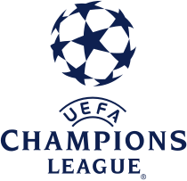
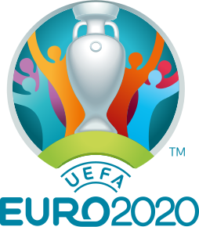
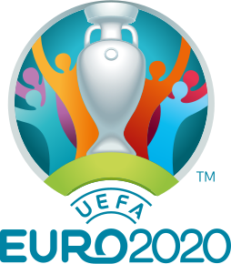

Competitions
International Competition
International competitions in association football principally consist of two varieties: competitions involving representative national teams or those involving clubs based in multiple nations and national leagues. International football, without qualification, most often refers to the former. In the case of international club competition, it is the country of origin of the clubs involved, not the nationalities of their players, that renders the competition international in nature.


 

Domestic Competitions
The governing bodies in each country operate league systems in a domestic season, normally comprising several divisions, in which the teams gain points throughout the season depending on results. Teams are placed into tables, placing them in order according to points accrued. Most commonly, each team plays every other team in its league at home and away in each season, in a round-robin tournament. At the end of a season, the top team is declared the champion. The top few teams may be promoted to a higher division, and one or more of the teams finishing at the bottom are relegated to a lower division.